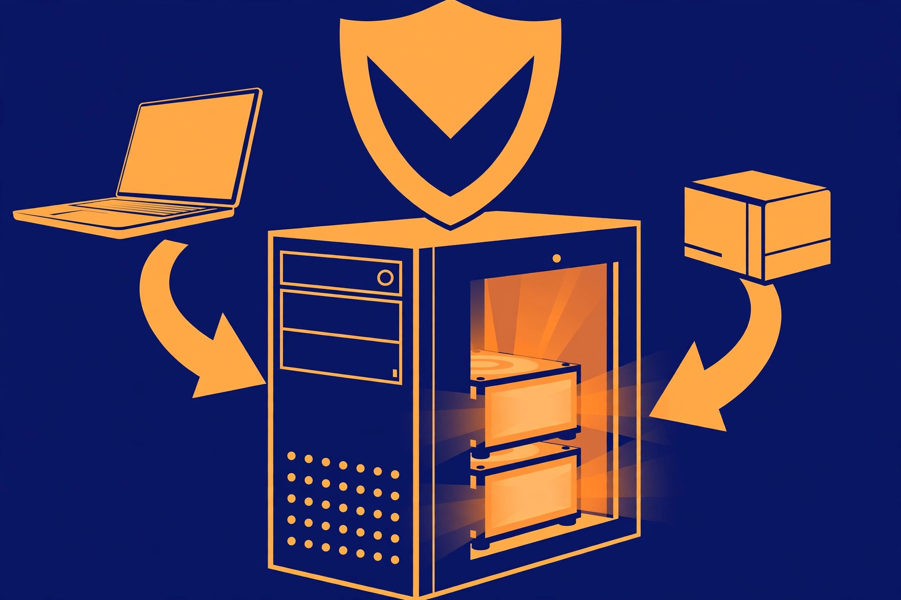

Use an old desktop PC as a home backup server

The household's files live scattered across laptops and desktops, and most of them exist in exactly one place. An old desktop PC — especially a tower with room for several drives — can fix that as a dedicated backup server: one always-ready target that every other computer in the house backs up to on a schedule. This is a different job from the media server covered elsewhere on this site. A media server serves files you enjoy; a backup server holds copies you hope never to need, and it is judged by one test only — whether you can get a file back from it on a bad day.
Is the old desktop up to it?
Almost certainly. File serving and receiving backups are gentle work: normal file-storage operations do not require much processing power or RAM, and desktops made in the last 15 to 20 years handle the job, down to elderly dual-core systems for basic sharing. What actually matters is the tower around the processor: at least four SATA ports on a typical motherboard means room for several drives, and PCIe slots leave space for more storage or a faster network card later. Two non-negotiables: connect the server to the router with an Ethernet cable rather than Wi-Fi — wired is more reliable and faster, which matters when a whole laptop is copying across — and give it drives you would trust, health-checked the same way you would check any old drive before giving it work.
Pick the software: three honest options
| Option | What it is | The honest trade-off |
|---|---|---|
| TrueNAS | A storage-first operating system built on ZFS, with snapshots and replication | The official minimum is a 2-core 64-bit processor, 8 GB of RAM, a 16 GB SSD boot device, and two identically sized drives for one storage pool. The strongest data protection of the three, and the most to learn. |
| OpenMediaVault | A lightweight, Debian-based NAS system | Runs well on modest hardware and is friendlier to older machines that would strain under heavier systems. |
| Windows with shared folders / Storage Spaces | The operating system already on the PC, sharing folders over the network | A workable stopgap with no new system to learn, but expect higher resource use and fewer advanced storage features than the purpose-built options. |
Whichever you choose, the pattern is the same: the server offers shared storage, and backup software on each household computer pushes scheduled copies to it. Tools such as Kopia, for example, can run on the household's Windows, Mac, and Linux machines and send scheduled, deduplicated snapshots to a repository on the old PC's big drive — backups that happen on their own, which is the only kind that reliably happens at all.
Redundancy is not backup: the 3-2-1 reality check
Two mirrored drives in the server feel safe, and they do protect against one specific event: a single drive dying. Mirroring is redundancy — the server keeps working when a drive fails. It is not a backup strategy, because everything in that one box shares the same risks. An always-on PC in the same building as the computers it protects is exposed to the same power surges, fire, theft, and ransomware as they are; a ransomware infection that reaches the server can encrypt the "backup" along with the originals.
The standard answer is the 3-2-1 rule: three copies of anything valuable, on two different storage media or devices, with one copy off-site. In this build, the copies land like this: the original files on each household computer (copy one), the backup server's drives (copy two), and an off-site copy — a cloud backup service, or a rotated external drive kept at another location (copy three). The old PC covers the middle copy beautifully. It cannot, by itself, cover the third. A mirror or parity layout inside the server is a sensible extra, as long as the off-site copy exists for the files that truly matter. One more discipline comes with encrypted backup tools: guard the repository password carefully, because end-to-end encryption means there is no "forgot password" rescue if it is lost.
What 24/7 actually costs: measure, then calculate
The honest downside of a desktop backup server is power. Desktop hardware is rarely as efficient as a small purpose-built NAS box, and an old gaming PC is the thirstiest starting point of all. Do not guess — measure. A plug-in power meter between the PC and the wall gives an idle wattage in one evening; the server's idle draw is its working life, since backups occupy a small fraction of the day.
The calculation is simple:
- Yearly energy = watts ÷ 1,000 × 24 hours × 365 days, in kilowatt-hours.
- Yearly cost = yearly kilowatt-hours × your electricity rate.
Worked example with round, hypothetical numbers: a meter reading of 50 watts works out to 0.05 × 24 × 365 = 438 kWh per year; at an example rate of $0.15 per kWh, that is about $66 per year. At 100 watts — plausible for an old gaming rig that never truly idles — the same math gives 876 kWh and about $131 per year. Your meter and your rate decide which end of that range is yours. If the number stings, the middle path is scheduling: many backup setups work fine with the server waking for a nightly backup window and sleeping the rest of the day, trading a little convenience for most of the power saving.
Set it up as a backup target, step by step
- Back up anything you want from the old PC's existing drives first — the setup that follows will likely wipe or reformat them.
- Shut the machine down, unplug it, open the case, and blow the dust out of the fans and heatsinks with compressed air. A server that runs all day needs its cooling.
- Install the drives the backups will live on, each on its own SATA port and firmly mounted. For a TrueNAS-style pool, use two identically sized drives so they can mirror.
- Connect a monitor and keyboard for the first boot — even a headless server needs them for installation — plus the Ethernet cable to the router.
- Install the system you chose. If you are using TrueNAS, install it to a small SSD boot device rather than a USB stick or a spinning disk, both of which its documentation discourages, and do not build the data pool as a single disk or a stripe — that removes the redundancy the build exists for.
- Create the shared backup storage and one folder or dataset per computer that will back up to it, with its own credentials where the software supports them.
- On each household computer, install the backup tool, point it at the server, select the folders that matter, and set a schedule — nightly for working machines, weekly at minimum.
- Run the first backup from every machine and watch it complete. Then set up the off-site copy for the irreplaceable folders, so the 3-2-1 chain is closed from day one.
What success looks like: the test restore
A backup that has never been restored is a hope, not a backup. Success here has a concrete shape: pick a real file on one of the household computers, delete a copy of it into a test folder, then restore it from the server — and repeat the same drill from the off-site copy. Both restores should return the file intact and openable. After that, success is quieter: scheduled backups completing on their own, the server reachable at the same network address, and a calendar reminder, twice a year, to run the restore drill again. The old desktop has earned its second job when the worst day in the house is an inconvenience instead of a loss.
FAQ
Is one big drive in the old PC enough? It works as a backup target, but a single drive is a single point of failure; two mirrored drives, plus an off-site copy, is the arrangement this guide is built around.
Does the server need to run all day? No. Scheduled wake-up for a nightly backup window covers most households and cuts the power cost sharply — just make sure the client computers are awake in the same window.
Can it double as the media server too? Technically yes, and many home servers do both. Keep the roles straight anyway: media can be re-ripped or re-downloaded, backups cannot, so the backup drives and the off-site copy get priority when space or money runs short.